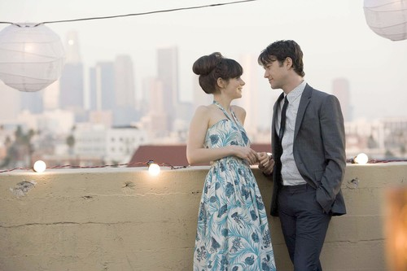

500 Days of Summer(stylized as (500) Days of Summer) is a 2009 American romantic comedy-drama film by first time director Marc Webb[3] from a screenplay written by Scott Neustadter and Michael H. Weber, and produced by Mark Waters. The film stars Joseph Gordon-Levitt and Zooey Deschanel, and employs a nonlinear narrative structure, with the story based upon its male protagonist and his memories of a failed relationship.
As an independent production, the film was picked up for distribution by Fox Searchlight Pictures and premiered at the 25th Sundance Film Festival. It garnered favorable reviews and became a successful "sleeper hit", earning over $60 million in worldwide returns, far exceeding its $7.5 million budget. Many critics lauded the film as one of the best from 2009 and drew comparisons to other acclaimed films such as Annie Hall (1977) and High Fidelity (2000).
